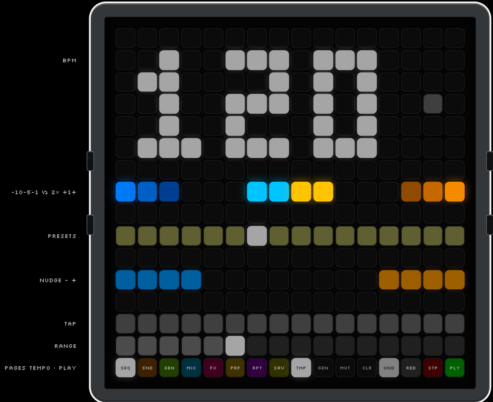
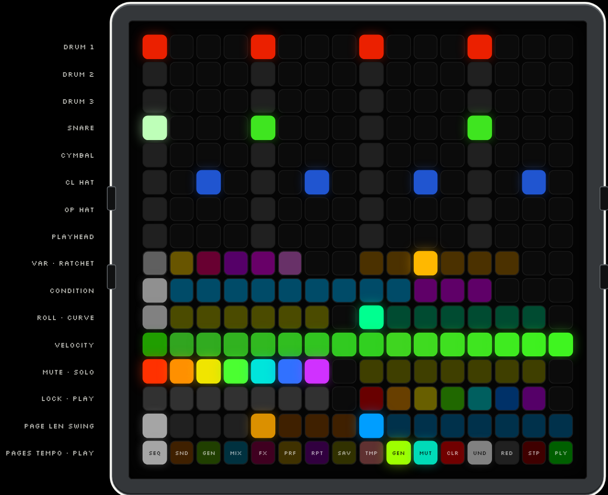
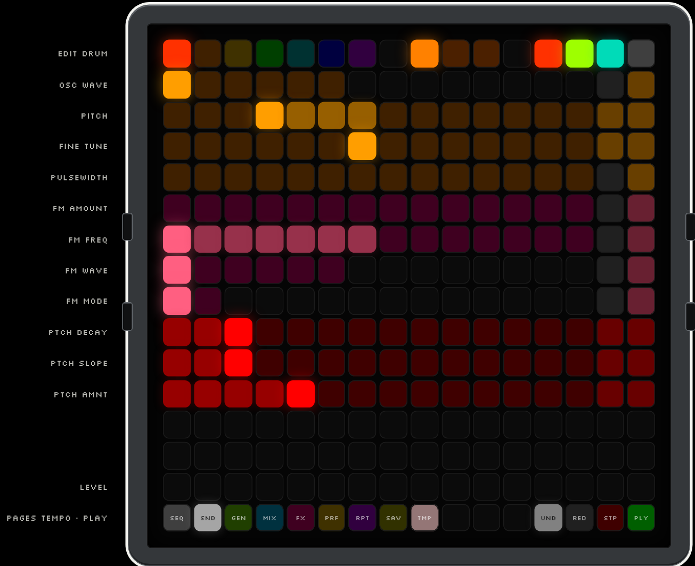
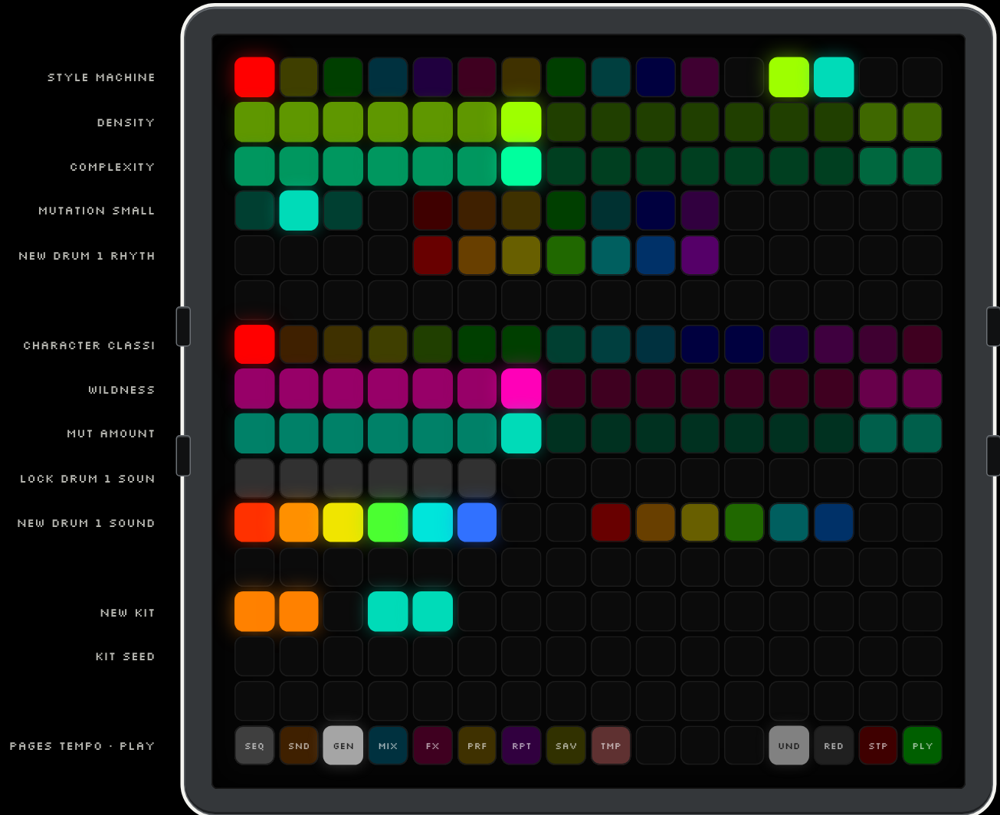
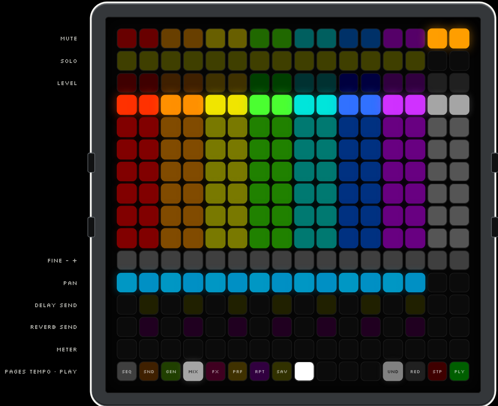
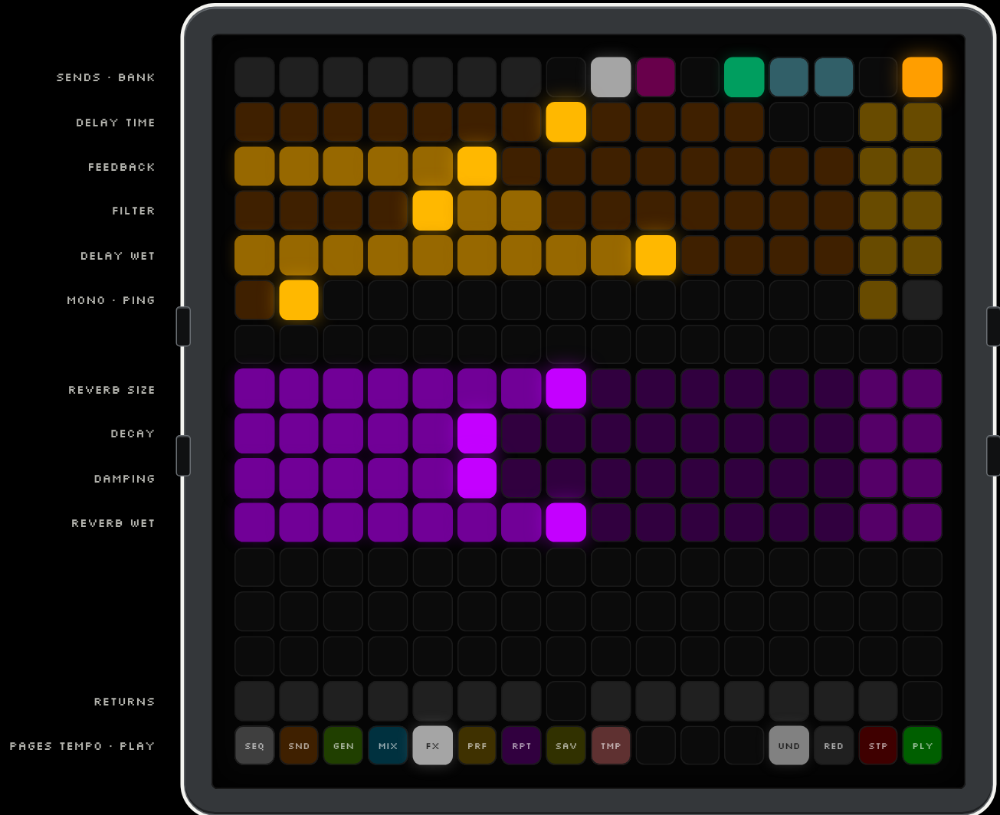
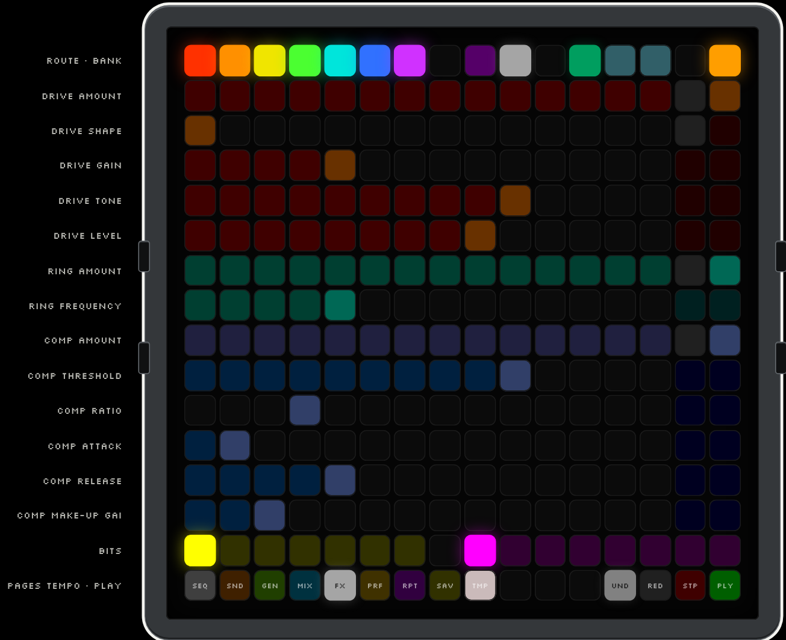
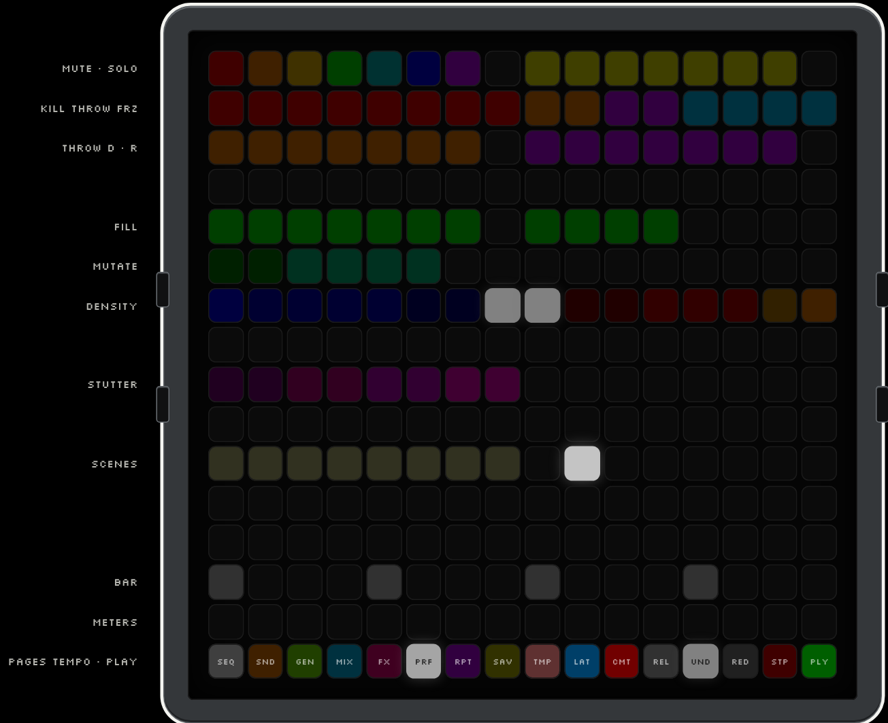
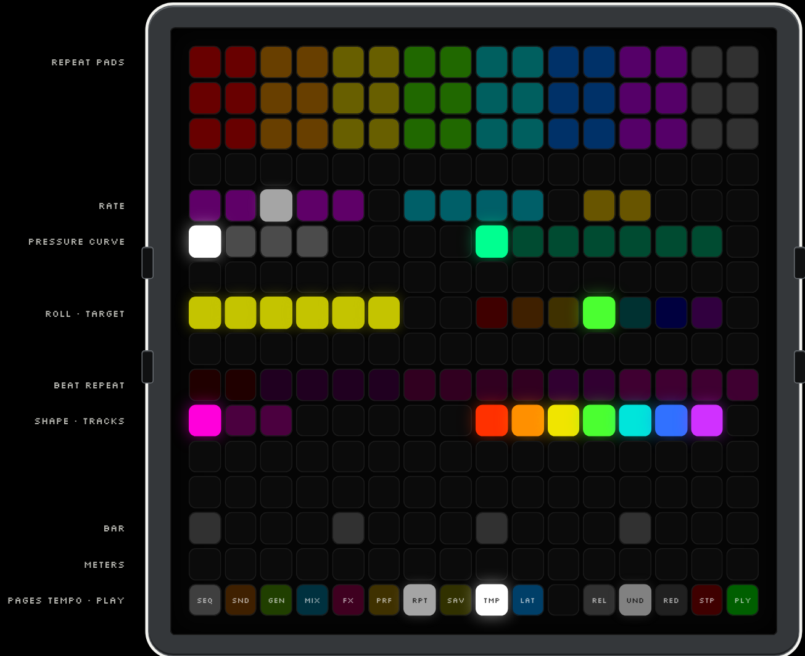
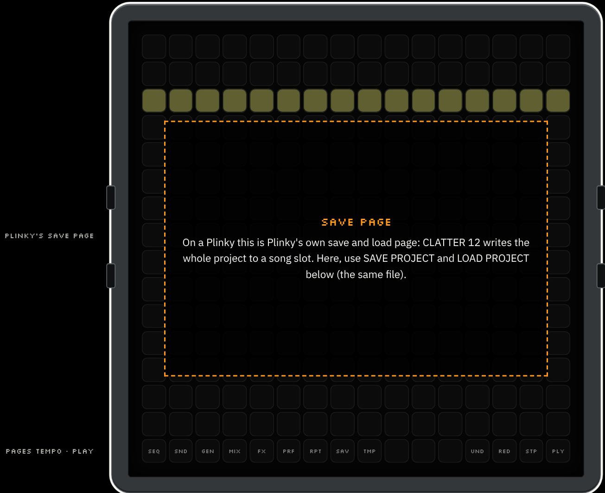

MANUAL
CLATTER 12, page by page and pad by pad.
Every page of the panel, every pad on it and what it does, the gestures that hold it together, and a crib sheet for each page to keep beside the Plinky. Version 0.0.4-exp. The screenshots are the panel itself, running on the project page.
00 Contents
- 01Quick startYour first beat in a minute.
- 02The gridRows, row 15, side buttons, kinds of control, colour.
- 03TEMPORow 15 · Pad 8 · Every Page
- 04SEQPage 1 · Row 15 Pad 0
- 05SOUNDPage 2 · Row 15 Pad 1
- 06GENPage 3 · Row 15 Pad 2
- 07MIXPage 4 · Row 15 Pad 3
- 08FXPage 5 · Row 15 Pad 4
- 09PERFORMPage 6 · Row 15 Pad 5
- 10REPEATPage 7 · Row 15 Pad 6
- 11SAVEPage 8 · Row 15 Pad 7
01 Quick start
- Press PLY (row 15, the last pad). A pattern plays. STP next to it stops.
- Tap a dark pad on SEQ's rows 0-6 to put a step in: the harder you press, the louder it is. Tap it again to take it out.
- Hold a lit step and tap the rows under the steps: a ratchet on row 8, a condition on row 9, a flam or roll on row 10.
- Tap TMP (row 15, pad 8) in time to set the tempo, or hold it for the tempo overlay.
- Change page with row 15's first eight pads: SEQ, SND, GEN, MIX, FX, PRF, RPT, SAV. On GEN, NEW KIT (row 12) designs a whole new kit.
- Go to PRF and hold pads: kills, throws, fills, stutters. Let go and the beat is back. UND undoes almost anything.
Nothing here has run on a Plinky 12. The manual describes the firmware as it behaves in its simulator and on the project page.
02 The grid
The grid is the instrument: a 16 × 16 field of pressure-sensitive pads, eight pages, and nothing more than one touch deep. No menus and no shift layers; the one overlay is the tempo's, and it lasts only while its pad is held. Throughout this manual rows are numbered 0 to 15 from the top and pads 0 to 15 from the left, as the firmware counts them.
Row 15: the same on every page
| Row | Pads | Control | What it does |
|---|---|---|---|
| 15 | 0-7 | PAGESNAVIGATION | SEQ, SOUND, GEN, MIX, FX, PERFORM, REPEAT, SAVE. The page shown is lit white. Audio never stops; a pad held on the page you leave is let go, and what LATCH holds keeps going. |
| 15 | 8 | TMPTAP · HOLD | Tap tempo; hold for the tempo overlay. Flashes on the beat. See TEMPO. |
| 15 | 9-11 | (the page's own) | SEQ: GEN, MUT, CLR. PERFORM: LAT, CMT, REL. REPEAT: LAT, REL. |
| 15 | 12 | UNDTAP | Undo: steps, generated or mutated patterns, kits and sounds, parameter edits, clears, length, copies and COMMITs. Edits of one kind close together undo as one. Sixteen levels. |
| 15 | 13 | REDTAP | Redo what UNDO took back. |
| 15 | 14 | STPTRANSPORT | Stop Plinky's transport, and the sequencer with it. |
| 15 | 15 | PLYTRANSPORT | Start or stop. |
Plinky's side buttons
| Button | What it does |
|---|---|
| Left, top / bottom | Tempo up / down; hold to repeat. The same clock as TMP. |
| Right, top / bottom | Previous / next page. Up from SEQ is the panel settings page, which shows the audio core's load (DSP). |
Kinds of control
Every pad is one of six kinds, and it looks like its kind. The project page's readout names the kind of any pad you hover.
| Kind | Looks like | Examples |
|---|---|---|
| MOMENTARY · HOLD | Dim at rest, its colour while held, white-tinted while LATCH holds it. | PERFORM, beat repeat, note repeat, freezes, nudge |
| TOGGLE | Lit when on. | Mute, solo, lock, LATCH, FX ENGINE, ROUTE, QUANTISE |
| CHOICE | The chosen one bright, the others faint. | Variation, ratchet, roll, curve, rate, bank |
| CONTINUOUS | A bar with − and + at its end (hold to repeat). | SOUND rows, FX rows, GEN density |
| HOLD 0.5 S · DESTRUCTIVE | Dark red, filling with red as it is held. Undoable. | CLR, COMMIT |
| DISPLAY | Does nothing when touched. | Meters, playhead, the bar's step, the seed |
Colour
Seven track hues, always in the same order: DRUM 1 DRUM 2 DRUM 3 SNARE CYMBAL CL HAT OP HAT. Brightness is velocity or level; white is the page shown, the selected step and the playhead. On the performance pages: kill red, delay amber, reverb violet, freeze ice blue, fill green, mutation teal, stutter and beat repeat magenta, scenes gold, LATCH blue, density blue (thinner) to orange (busier).
03 TEMPO
ROW 15 · PAD 8 · EVERY PAGE
The TMP pad sits on row 15 of every page. Tap it in time to set the tempo; hold it to open the tempo overlay over rows 0 to 14, for as long as you hold it. It flashes on each beat. There is one clock: every change is Plinky's own tempo, the same one the left side buttons move, and the sequencer follows it.

The pads
| Row | Pads | Control | What it does |
|---|---|---|---|
| 15 | 8 | TMP: tapTAP | Tap tempo from the second tap (the average of the last up to three intervals). A 2 second pause starts a new count. |
| 15 | 8 | TMP: holdMOMENTARY | Hold for 0.3 s: the tempo overlay replaces rows 0-14 while held. Let go and the page comes back. |
| 1-5 | 0-12 | BPMDISPLAY | The tempo in pad digits. Amber after a tap tempo. |
| 3 | 14 | BEATDISPLAY | Flashes on each beat. |
| 7 | 0-2 | -10 -5 -1TAP | Coarse and fine steps down. The sequencer keeps whole BPM, so 1 is the finest step. |
| 7 | 6-7 | HALF TIMETAP | Halve the tempo. |
| 7 | 8-9 | DOUBLE TIMETAP | Double the tempo (at most 300). |
| 7 | 13-15 | +1 +5 +10TAP | Fine and coarse steps up. |
| 9 | 0-15 | PRESETSTAP | Go straight to 70 80 90 100 110 115 120 124 128 132 136 140 150 160 170 174 BPM. |
| 11 | 0-3 | NUDGE SLOWERMOMENTARY | While held, about 4 % slower, to pull the beat into line with something else. Let go: back to the tempo. |
| 11 | 12-15 | NUDGE FASTERMOMENTARY | While held, about 4 % faster. |
| 13 | 0-15 | TAPTAP | Tap the beat on any pad of the row. |
| 14 | 0-15 | TEMPO RANGEDISPLAY | Where the tempo sits between 30 and 300 BPM. |
A tempo change applies from the next LXR block and never moves the play position. Ratchets, repeats and the delay's time all follow it. Hold TMP with one hand and tap the overlay with the other: it is a two-handed gesture, like holding a step to edit it.
04 SEQ
PAGE 1 · ROW 15 PAD 0
The sequencer: seven LXR triggers by 16 steps, up to 64 steps in four views. Tap to put a step in, tap to take it out, hold a step to edit it with the rows below. Brightness is velocity; a step tinted towards white carries a variation, condition or ratchet.

The pads
| Row | Pads | Control | What it does |
|---|---|---|---|
| 0-6 | 0-15 | STEPSSTEP PAD | One row per track: DRUM 1, DRUM 2, DRUM 3, SNARE, CYMBAL, CL HAT, OP HAT. The 16 steps of the view shown on row 14. |
| 7 | 0-15 | PLAYHEADDISPLAY | The step playing now. |
| 8 | 0-5 | VARIATIONCHOICE | NONE, A, B, SECOND SOUND, SECOND SOUND A, SECOND SOUND B: the same LXR voice with its parameters moved for that hit. Every track has A and B; DRUM 3 and SNARE also have a second sound (percussion, clap). |
| 8 | 8-13 | RATCHETCHOICE | 1x 2x 3x 4x 6x 8x: strokes within the step (32nds, 32nd triplets, 64ths, 64th triplets, 128ths). Never closer than 12 ms, so at fast tempos 8x plays 6 or 4. |
| 9 | 0-12 | CONDITIONCHOICE | ALWAYS · 1:2 2:2 · 1:3 2:3 3:3 · 1:4 2:4 3:4 4:4 · 25 % 50 % 75 %. Passes are counted from PLAY: 1:2 plays on the first of every two, 2:2 on the second. |
| 10 | 0-6 | ROLLCHOICE | NONE, FLAM, DRAG, DOUBLE, TRIPLE, ACCELERATING, DECELERATING. Flams and drags play ahead of the step, so the hit stays on the beat. |
| 10 | 8-14 | CURVECHOICE | How a ratchet's or roll's strokes run: FLAT, FADE IN, FADE OUT, ACCENT FIRST, ACCENT LAST, ALTERNATING, HUMAN. |
| 11 | 0-15 | VELOCITYCHOICE | Sixteen levels, 8 to 127: set the selected step's velocity exactly. |
| 12 | 0-6 | MUTETOGGLE | Mute a track: its steps do not reach the voice and its sound is cut. Dark when muted. |
| 12 | 8-14 | SOLOTOGGLE | Only soloed tracks are heard. |
| 13 | 0-6 | LOCKTOGGLE | Lock a track's rhythm: GENERATE and MUTATE leave it alone. |
| 13 | 8-14 | PLAYAUDITION | Play the voice now, as loud as you press. |
| 14 | 0-3 | VIEW 1-16 … 49-64CHOICE | Show that page of steps. Hold one and tap another to copy it there. |
| 14 | 4-7 | LENGTHCHOICE | 16, 32, 48 or 64 steps play. |
| 14 | 8-15 | SWINGCHOICE | 50 54 57 61 64 68 71 75 %: 50 is straight, 75 dotted. |
| 15 | 9 | GENTAP | A new pattern in the GEN page's style, density and complexity. Locked tracks stay. |
| 15 | 10 | MUTTAP | Musical edits to the unlocked tracks, at the GEN page's mutation strength. |
| 15 | 11 | CLRHOLD · DESTRUCTIVE | Hold half a second to clear every step. UNDO brings them back. |
Steps: tap, hold, edit
| Gesture | Result |
|---|---|
| Tap an empty step | On, as loud as you press, and selected. Stopped, it plays. |
| Tap a lit step | Off (released within 0.3 s), with everything it carried. |
| Hold a lit step | It stays on and is selected; rows 8-11 show and change it. Pressure re-takes its velocity until you touch an editor pad. |
| Hold a step, tap an editor pad | The edit applies; the step keeps its velocity, so a light hold does not quieten an accent. |
| Hold several steps, tap an editor pad | All of them change together. |
| After letting go | The step stays selected: the editor rows keep acting on it. |
| Hold a VIEW pad, tap another | Copy that page of steps onto the other. |
Rolls
| Roll | What plays |
|---|---|
| FLAM | One soft grace note about a 64th before the hit (15-35 ms), played ahead of the step. |
| DRAG | Two grace notes a 128th apart before the hit: a ruff. |
| DOUBLE | Two strokes in the step, the second a little softer. |
| TRIPLE | Three strokes, 100 / 72 / 86 %. |
| ACCELERATING | Strokes closing in over two steps, rising. The ratchet count sets how many (6 if under 3). |
| DECELERATING | Strokes spreading out over two steps, falling away. |
Stopped, every ratchet, roll and curve pad plays the selected step as it now sounds, so you can hear a choice as you make it.
05 SOUND
PAGE 2 · ROW 15 PAD 1
Every LXR parameter of one voice, a row each, its value across the row. Three banks, SOURCE, SHAPE and MOD. Changes are heard at once; stopped, the voice plays as you edit (at most every 150 ms), so you can shape a sound without a pattern running.

The pads
| Row | Pads | Control | What it does |
|---|---|---|---|
| 0 | 0-6 | EDITCHOICE | Choose the voice to edit: DRUM 1, DRUM 2, DRUM 3, SNARE, CYMBAL, CL HAT, OP HAT. The two hats are one LXR voice. |
| 0 | 8-10 | BANKCHOICE | SOURCE: oscillator, noise, modulators, FM, pitch envelope. SHAPE: amplitude envelope, transient, filter, drive. MOD: LFO, velocity, volume, pan, sample rate. |
| 0 | 12 | AUDITIONAUDITION | Play the voice, as loud as you press, without leaving the page. |
| 0 | 13 | NEW SOUNDTAP | Design a new sound for this voice, of the same family as the kit (CLATTER's kit designer). |
| 0 | 14 | MUTATE SOUNDTAP | Move this voice towards another sound the designer draws for it, by the GEN page's MUTATION AMOUNT. |
| 0 | 15 | LOCK SOUNDTOGGLE | Locked, the voice keeps every parameter through NEW KIT and MUTATE KIT. |
| 1-13 | 0-13 | PARAMETERCONTINUOUS | Tap to set the value, left (0) to right (max). Bipolar values (pitch, pan) run from the centre. Menus (waves, filter types, transients) show one pad per option. |
| 1-13 | 14 | −CONTINUOUS | One step down; hold to repeat. |
| 1-13 | 15 | +CONTINUOUS | One step up; hold to repeat. |
| 14 | 0-6 | LEVELSDISPLAY | Each voice's level as it plays. |
What each bank holds
| Voice | SOURCE | SHAPE |
|---|---|---|
| DRUM 1-3 | OSC WAVE, PITCH, FINE TUNE, PULSEWIDTH, FM AMOUNT, FM FREQ, FM WAVE, FM MODE, PITCH DECAY, PITCH SLOPE, PITCH AMOUNT | ATTACK, DECAY (hats: CLOSED and OPEN DECAY), AMP SLOPE, REPEAT (snare, cymbal), DRIVE, TRANSIENT WAVE, LEVEL and PITCH, CUTOFF, RESONANCE, FILTER TYPE, FILTER DRIVE |
| SNARE | OSC WAVE, PITCH, FINE TUNE, PULSEWIDTH, NOISE FREQ, NOISE MIX, PITCH DECAY, PITCH SLOPE, PITCH AMOUNT | |
| CYMBAL | OSC WAVE, PITCH, FINE TUNE, PULSEWIDTH, MOD1 WAVE, FREQ and AMOUNT, MOD2 WAVE, FREQ and AMOUNT | |
| HI-HAT |
MOD is the same for every voice: LFO RATE, SYNC, DEPTH, WAVE, RETRIGGER and PHASE, VELOCITY AMOUNT, VELOCITY TO VOLUME, VOLUME, PAN, SAMPLE RATE. The two TARGET parameters (LFO target, velocity destination) are not on the grid: their values name other parameters. Hover a row on the project page to read the parameter's name and value.
06 GEN
PAGE 3 · ROW 15 PAD 2
CLATTER's pattern generator on the top half, its kit designer on the bottom. Every result is a new design, not a preset: NEW KIT draws a new seed each time. Locks keep what you like. Everything here is undoable.

The pads
| Row | Pads | Control | What it does |
|---|---|---|---|
| 0 | 0-10 | STYLECHOICE | MACHINE, ELECTRO, BREAKS, JUNGLE, HALFTIME, BROKEN, GARAGE, INDUSTRIAL, GLITCH, POLYMETER, DUB: the rhythm style GENERATE writes in. |
| 0 | 12 | GENERATETAP | A new pattern: style, density and complexity as set, locked tracks kept. |
| 0 | 13 | MUTATETAP | Edit the pattern musically, at the mutation strength. |
| 1 | 0-15 | DENSITYCONTINUOUS | How busy a new pattern is (50 is the style as written). Raising it adds hits to the same rhythm. − and + at x14-15. |
| 2 | 0-15 | COMPLEXITYCONTINUOUS | How unpredictable a new pattern is. |
| 3 | 0-2 | MUTATIONCHOICE | SMALL, MEDIUM, LARGE: how much MUTATE changes. |
| 3 | 4-10 | LOCKTOGGLE | A locked track keeps its rhythm through GENERATE and MUTATE (the same locks as SEQ row 13). |
| 4 | 4-10 | NEW RHYTHMTAP | Generate this one track alone; again for another take. |
| 6 | 0-15 | KIT CHARACTERCHOICE | CLASSIC, ANALOG, DIGITAL, INDUSTRIAL, MINIMAL, GLITCH, TECHNO, ELECTRO, DUB, NOISE, METALLIC, SOFT, BROKEN, ACID, LO-FI, CHAOS. |
| 7 | 0-15 | WILDNESSCONTINUOUS | How far new and mutated sounds stray from the character: 50 as written; higher lets voices become other archetypes. |
| 8 | 0-15 | MUTATION AMOUNTCONTINUOUS | How far MUTATE KIT and MUTATE SOUND move a sound. |
| 9 | 0-5 | LOCK SOUNDTOGGLE | DRUM 1, DRUM 2, DRUM 3, SNARE, CYMBAL, HI-HAT: a locked sound keeps every parameter through NEW KIT and MUTATE KIT. |
| 10 | 0-5 | NEW SOUNDTAP | Design a new sound for this voice alone. |
| 10 | 8-13 | MUTATE SOUNDTAP | Move this voice by the mutation amount. |
| 12 | 0-1 | NEW KITTAP | A whole new kit of the chosen character: every unlocked voice. UNDO returns to the last one. |
| 12 | 3-4 | MUTATE KITTAP | Move every unlocked voice by the mutation amount. |
| 13 | 0-15 | KIT SEEDDISPLAY | The current kit's seed, in binary. |
Mutation moves a voice towards another sound the designer draws for it. Menus (waveforms, filter types) switch with a chance that grows with the amount, and bring their companions with them, so a mutation stays inside what the designer makes. The SEQ page's GEN and MUT pads (row 15) use the style, density, complexity and strength set here.
07 MIX
PAGE 4 · ROW 15 PAD 3
Eight channel strips, two pads wide: the seven tracks (pads 0-1 DRUM 1, 2-3 DRUM 2 … 12-13 OP HAT) and the master at pads 14-15. All of it is real audio: CLATTER 12 mixes the LXR's voices itself.

The pads
| Row | Pads | Control | What it does |
|---|---|---|---|
| 0 | both | MUTETOGGLE | Mute the track. Master strip: the LIMITER, on or off (on, nothing reaches full scale: no clipping). |
| 1 | both | SOLOTOGGLE | Solo the track (not on the master). |
| 2-9 | both | LEVELCHOICE | Tap a row: 115 (+2.4 dB), 100 (unity), 90, 78, 65, 50 (−12 dB), 30, off. |
| 10 | left / right | LEVEL − / +CONTINUOUS | Fine level adjustment. |
| 11 | left / right | PANCONTINUOUS | Move the voice left or right (the LXR's own pan, applied as each hit starts). Both pads at once: centre. |
| 12 | left / right | DELAY SEND − / +CONTINUOUS | How much of the track goes to the delay: CLATTER 12's (FX page, SPACE), or Plinky's own with FX ENGINE set to PLINKY. Post-fader, 8 steps of 16. |
| 13 | left / right | REVERB SEND − / +CONTINUOUS | How much of the track goes to the reverb. |
| 14 | both | METERDISPLAY | The track's level as it plays. |
A level is a gain with a short ramp; a mute holds the track's triggers back and cuts its voice. The two hats are one LXR voice: its level and pan follow whichever hat track last played it.
08 FX
PAGE 5 · ROW 15 PAD 4
Two banks, chosen on row 0. SPACE is CLATTER 12's own delay and reverb, fed by the MIX page's sends. COLOUR is the LXR-02 firmware's own drive, ring modulator and compressor on the tracks you route, plus bit and sample-rate reduction. At wet 0 an effect is off and costs nothing.


The pads
| Row | Pads | Control | What it does |
|---|---|---|---|
| 0 | 0-6 | SENDS / ROUTEDISPLAY / TOGGLE | SPACE: each track's delay (amber) and reverb (violet) sends, as set on MIX. COLOUR: ROUTE, whether the track goes through the COLOUR chain. |
| 0 | 8 | SPACECHOICE | Show the delay and reverb bank. |
| 0 | 9 | COLOURCHOICE | Show the drive, ring modulator and compressor bank. |
| 0 | 11 | FX ENGINETOGGLE | Where the sends go. CLATTER 12 (green): its own delay and reverb, set here. PLINKY (yellow): Plinky's own, set in Plinky's mix settings; the SPACE rows then do nothing. |
| 0 | 12 | DELAY FREEZEMOMENTARY | While held, the delay loops what it holds and takes nothing new. Let go: it decays. |
| 0 | 13 | REVERB FREEZEMOMENTARY | While held, the reverb tail stops decaying. Let go: it fades. |
| 0 | 15 | LIMITERTOGGLE | The output limiter on or off. |
SPACE bank
| Row | Pads | Control | What it does |
|---|---|---|---|
| 1 | 0-11 | DELAY TIMECHOICE | 1/32, 1/16T, 1/16, 1/8T, 1/16D, 1/8, 1/4T, 1/8D, 1/4, 1/2T, 1/4D, 1/2, at the tempo (it follows tempo changes, gliding). Longer than 1.48 s, it halves. − + at x14-15. |
| 2 | 0-15 | DELAY FEEDBACKCONTINUOUS | How much of each echo comes round again: 0 one echo, 100 a long trail (never runaway). |
| 3 | 0-15 | DELAY FILTERCONTINUOUS | In the loop, so each repeat is filtered again: left of centre low-pass (darker), right high-pass (thinner), centre open. |
| 4 | 0-15 | DELAY WETCONTINUOUS | The delay's return level. |
| 5 | 0-1 | MONO / PING-PONGCHOICE | Every echo in the middle, or alternating left and right. |
| 7 | 0-15 | REVERB SIZECONTINUOUS | The room's size. |
| 8 | 0-15 | REVERB DECAYCONTINUOUS | How long the tail rings: 0.3 s at 0 to 8 s at 100. |
| 9 | 0-15 | REVERB DAMPINGCONTINUOUS | How fast the tail loses its top: bright at 0, dark at 100. |
| 10 | 0-15 | REVERB WETCONTINUOUS | The reverb's return level. |
| 14 | 0-6 / 8-14 | RETURNSDISPLAY | The delay's and the reverb's levels as they sound. |
COLOUR bank
| Row | Pads | Control | What it does |
|---|---|---|---|
| 1-5 | 0-15 | DRIVECONTINUOUS | AMOUNT (wet), SHAPE (TUBE, FOLD, RAT), GAIN, TONE, LEVEL. |
| 6-7 | 0-15 | RING MODCONTINUOUS | AMOUNT (wet), FREQUENCY. |
| 8-13 | 0-15 | COMPRESSORCONTINUOUS | AMOUNT (wet), THRESHOLD, RATIO (1:1 2:1 3:1 4:1 6:1 8:1), ATTACK, RELEASE, MAKE-UP GAIN. |
| 14 | 0-6 | BITSCHOICE | 16 (off), 12, 10, 8, 6, 5, 4: bit reduction of the whole mix. |
| 14 | 8-15 | SAMPLE RATECHOICE | 127 (full), 100, 80, 60, 45, 32, 20, 10: the LXR's own sample-rate reduction of every voice. |
Every continuous row is a bar: tap a pad to set it, − and + at pads 14 and 15 for single steps (hold to repeat). The freezes are also on the PERFORM page, where LATCH can hold them. Projects saved by version 0.0.2 load with FX ENGINE on PLINKY, as they sounded then.
09 PERFORM
PAGE 6 · ROW 15 PAD 5
Everything here is temporary: it lasts while the pad is held and leaves the pattern, kit and mixer alone. LATCH makes a tap hold instead; COMMIT writes what you are hearing into the pattern; UNDO takes it back.

The pads
| Row | Pads | Control | What it does |
|---|---|---|---|
| 0 | 0-6 | MUTEMOMENTARY | Silent while held. The mixer's own mute is untouched (COMMIT makes it one). |
| 0 | 8-14 | SOLOMOMENTARY | Only this track (and other held solos) while held. |
| 1 | 0-7 | KILL LOW · MID · HIGH · ALLMOMENTARY | Two pads each: DRUM 1-2, DRUM 3 and SNARE, CYMBAL and hats, everything. Cut at once while held; delay and reverb tails ring on. |
| 1 | 8-9 | DELAY THROW (ALL)MOMENTARY | Every track's delay send at full while held: let go and the echoes trail off. |
| 1 | 10-11 | REVERB THROW (ALL)MOMENTARY | Every track's reverb send at full while held. |
| 1 | 12-13 | DELAY FREEZEMOMENTARY | The delay loops what it holds. |
| 1 | 14-15 | REVERB FREEZEMOMENTARY | The reverb tail holds still. |
| 2 | 0-6 | DELAY THROWMOMENTARY | One track's delay send at full while held. |
| 2 | 8-14 | REVERB THROWMOMENTARY | One track's reverb send at full while held. |
| 4 | 0-6 | FILLMOMENTARY | The track fills its gaps, more and louder towards the end of the bar, the last steps ratcheting. |
| 4 | 8-9 | FILL DRUMSMOMENTARY | DRUM 2, DRUM 3 and SNARE fill. |
| 4 | 10-11 | FILL ALLMOMENTARY | Every track fills. |
| 5 | 0-5 | MUTATE S · M · LMOMENTARY | Two pads each: a mutation of the pattern plays while held (locked tracks kept), a new one each press. |
| 6 | 0-15 | DENSITYMOMENTARY | Pads 0-6 thinner (soft hits drop first), 7-8 as written, 9-15 busier (ghost notes in the gaps). |
| 8 | 0-7 | STUTTERMOMENTARY | Two pads each: 1/8, 1/16, 1/32, 1/32T. The step just played repeats at this rate; let go and the sequence is where it would have been. Shape and tracks: REPEAT row 10. |
| 10 | 0-7 | SCENES 1-8TAP · HOLD 1 S | Tap: recall the scene at the next bar (at once when stopped). Hold one second: store the present into it. |
| 10 | 9 | QUANTISETOGGLE | Whether a scene waits for the next bar or changes at once. |
| 13 | 0-15 | STEP IN THE BARDISPLAY | Where the sequence is in its bar: for timing a throw, a fill or a scene. |
| 14 | 0-6, 8, 10-11 | METERSDISPLAY | Tracks, output, delay and reverb returns. |
| 15 | 9 | LATTOGGLE | LATCH. Off: a pad lasts while held. On: a tap holds it until tapped again. Turning it off lets everything go. Shared with REPEAT. |
| 15 | 10 | CMTHOLD · DESTRUCTIVE | COMMIT. Hold half a second: the mutation, fill or density is written into the pattern, mutes and solos into the mixer; then everything is released. Throws, freezes and stutters are moments and are not written. |
| 15 | 11 | RELTAP | RELEASE ALL: let go of everything LATCH holds. |
A scene is a snapshot of the mixer (levels, mutes, solos, sends, routing, master) and every FX setting. Recalled on the bar, the bar's first hit is already in the new scene. CLATTER 12 has one pattern and one kit, so a scene does not change them. Scenes are saved with the project.
10 REPEAT
PAGE 7 · ROW 15 PAD 6
Note repeat, rolls by hand and beat repeat. Hold a track's pad and it strikes in time; press harder for louder, faster or more often. Like PERFORM, its pads are momentary and LATCH holds them.

The pads
| Row | Pads | Control | What it does |
|---|---|---|---|
| 0-2 | 0-13 | REPEATMOMENTARY | A track each, two pads wide (DRUM 1 at 0-1 … OP HAT at 12-13). Hold to strike the voice on the RATE's grid: the first at once, then in time with the sequence. Several at once. It also makes this track the roll target. |
| 0-2 | 14-15 | PRESS VELOCITYDISPLAY | The velocity your press gives the repeats. |
| 4 | 0-4 | RATE straightCHOICE | 1/4, 1/8, 1/16, 1/32, 1/64 (violet). |
| 4 | 6-9 | RATE tripletCHOICE | 1/4T, 1/8T, 1/16T, 1/32T (cyan). |
| 4 | 11-12 | RATE dottedCHOICE | 1/8D, 1/16D (amber). Never faster than one strike in 10 ms. |
| 5 | 0-3 | PRESSURECHOICE | VELOCITY: harder is louder (45-127, the default). RATE: harder is faster (2× past a firm press, 4× past a hard one). CHANCE: harder plays more of the strikes. FIXED: every strike at 100. |
| 5 | 8-14 | CURVECHOICE | FLAT, FADE IN, FADE OUT, ACCENT FIRST, ACCENT LAST (accents each beat), ALTERNATING, HUMAN. Fades run over the first eight strikes. |
| 7 | 0-5 | ROLLTAP | FLAM, DRAG, DOUBLE, TRIPLE, ACCELERATING, DECELERATING, played now on the held REPEAT tracks, or else the target. On the next step when playing. As loud as you press. |
| 7 | 8-14 | ROLL TARGETCHOICE | The track a roll pad plays. |
| 9 | 0-15 | BEAT REPEATMOMENTARY | Two pads each: 1 BAR, 1/2, 1/4, 1/8, 1/16, 1/32, 1/16T, 1/32T. While held, the last stretch of the sequence of that length repeats, for the tracks lit on row 10. Let go: the sequence is where it would have been. |
| 10 | 0-2 | SHAPECHOICE | FLAT (each repeat as loud), FADE (each softer), BUILD (building up). Also shapes PERFORM's STUTTER. |
| 10 | 8-14 | TRACKSTOGGLE | Whether each track takes part in BEAT REPEAT and STUTTER. Unlit: it plays on as written. |
| 13 | 0-15 | STEP IN THE BARDISPLAY | Where the sequence is in its bar. |
| 14 | 0-6, 8, 10-11 | METERSDISPLAY | Tracks, output, delay and reverb returns. |
| 15 | 9 | LATTOGGLE | LATCH, shared with PERFORM: a tap keeps a repeat going. |
| 15 | 11 | RELTAP | RELEASE ALL: let go of everything LATCH holds. |
Beat repeat is the sequencer repeating, not a recording: kits and edits stay live while it loops. Lengths shorter than a step (1/32, the triplets) retrigger the step's hits at that rate. The ROLL pads are the way to audition a roll on any track before writing it into a step on SEQ (row 10).
11 SAVE
PAGE 8 · ROW 15 PAD 7
Plinky's own save and load page. CLATTER 12 saves the whole project into a song slot: steps, kit, mixer, FX, tempo, swing, generator settings, REPEAT settings and scenes. Leave it with the right side buttons or row 15.

The pads
| Row | Pads | Control | What it does |
|---|---|---|---|
| all | SAVE / LOADPLINKY | Plinky draws this page itself; use it as on any Plinky panel to choose a slot and save or load. |
Projects from older versions load converted: version-1 projects (0.0.2) bring their ratchet spacing and velocity runs across as rolls and curves, and their sends to Plinky's effects. On the project page there is no Plinky save page: SAVE PROJECT downloads the very JSON the panel gives Plinky's save page, and LOAD PROJECT reads one back.